Next: การคุ้มครองจากการเสียหาย
Up: ตัวอย่างการวิเคราะห์ความน่าเชื่อถือ และการคุ้มครองจากความเสียหาย
Previous: ตัวอย่าง: การคำนวณค่าความน่าเชื่อถือของระบบอนุกรม
Contents
Index
ระบบคอมพิวเตอร์ในการประยุกต์ใช้งานอวกาศ มักใช้สถาปัตยกรรมพื้นฐานแสดงในรูป 11.3 ระบบประกอบด้วยชุดอุปกรณ์ดังต่อไปนี้
- คอมพิวเตอร์ที่เหมือนกันทุกประการสองชุด
- ชุดอินเตอร์เฟสที่เหมือนกันทุกประการสองชุด
- ชุดแสดงผลที่เหมือนกันทุกประการสองชุด
ระบบต้องการอย่างน้อยหนึ่งโมดูล ในชุดอุปกรณ์ให้ทำงานได้ เพื่อที่ระบบจะสามารถทำงานได้ ถ้าโมดูลใดโมดูลหนึ่งเสีย โมดูลที่เหลือจะเข้าทำงานแทน
Figure 11.3:
สถาปัตยกรรมพื้นฐานของระบบคอมพิวเตอร์ในการประยุกต์ใช้งานอวกาศ
|
|
ระบบที่แสดงในรูป 11.3 เป็นระบบที่ประกอบกันทั้งระบบแบบขนาน และระบบอนุกรม ระบบขนานอยู่ในส่วนของชุดประกอบของระบบ ซึ่งชุดประกอบนั้นมีลักษณะอนุกรมกันอยู่ เนื่องจากอย่างน้อย หนึ่งคอมพิวเตอร์, หนึ่งอินเตอร์เฟส, และ หนึ่งชุดแสดงผล จะต้องทำงานได้ ระบบจึงจะทำงานได้ แผนภาพกล่องความน่าเชื่อถือของระบบแสดงในรูป 11.4
Figure 11.4:
แผนภาพกล่องความน่าเชื่อถือของระบบคอมพิวเตอร์ในการประยุกต์ใช้งานอวกาศ
|
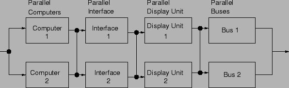
|
แผนภาพกล่องความน่าเชื่อถือที่ประกอบด้วยระบบอนุกรม และระบบขนานสามารถคำนวณหาค่าความน่าเชื่อถือได้ โดยการยุบระบบแบบขนานให้เหมือนกับเป็นโมดูลเดียวในแผนภาพกล่องความน่าเชื่อถือ ตัวอย่างเช่น เราสามารถหาค่าความน่าเชื่อถือของระบบคอมพิวเตอร์ที่ขนานกันสองชุด ได้จากสมการ
เมื่อ 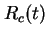 คือค่าความน่าเชื่อถือของคอมพิวเตอร์ ดังนั้น เราสามารถแทนระบบคอมพิวเตอร์ที่ทำงานเหมือนกันสองชุด ด้วยความน่าเชื่อถือ
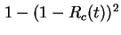 ดังแสดงในรูป
11.5
Figure 11.5:
การยุบระบบแบบขนานให้เหมือนกับเป็นโมดูลเดียว
|
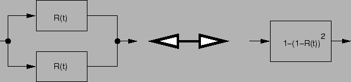
|
ในระบบคอมพิวเตอร์ที่พิจารณา เราสามารถยุบแผนภาพกล่องความน่าเชื่อถือ จากการยุบ ระบบย่อยแบบขนานเป็นหนึ่งโมดูลแสดงในรูป 11.6 คือค่าความน่าเชื่อถือของคอมพิวเตอร์, 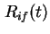 คือค่าความน่าเชื่อถือชุดอินเตอร์เฟส, 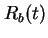 คือค่าความน่าเชื่อถือบัส, 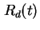 คือค่าความน่าเชื่อถือชุดแสดงผล
Figure 11.6:
แผนภาพกล่องความน่าเชื่อถือที่ลดทอนแล้วของระบบคอมพิวเตอร์ ในการประยุกต์ใช้งานอวกาศ
|
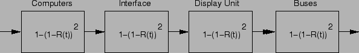
|
ค่าความน่าเชื่อถือของระบบสามารถคำนวณได้เท่ากับ
| 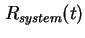 |
 |
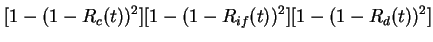 |
|
| |
|
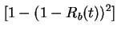 |
(11.9) |
ให้ค่าความน่าเชื่อถือหลังจากหนึ่งชั่วโมงของอุปกรณ์ เท่ากับ
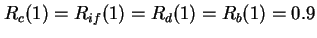 ค่าความน่าเชื่อถือของระบบจะเท่ากับ
| 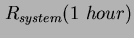 |
|
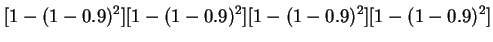 |
|
| |
|
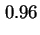 |
(11.10) |
ถ้าเป็นระบบที่ไม่มีโมดูลสำรอง คือประกอบด้วยระบบอนุกรมพื้นฐาน ค่าความน่าเชื่อถือหลังจากหนึ่งชั่วโมงของระบบจะเท่ากับ 0.6561 จะเห็นได้ว่าการใช้ระบบสำรองสามารถเพิ่มความน่าเชื่อถือได้มาก
Next: การคุ้มครองจากการเสียหาย
Up: ตัวอย่างการวิเคราะห์ความน่าเชื่อถือ และการคุ้มครองจากความเสียหาย
Previous: ตัวอย่าง: การคำนวณค่าความน่าเชื่อถือของระบบอนุกรม
Contents
Index
Vara Varavithya
2002-03-09
![\includegraphics[width=4.in]{fig/fev6sepa.eps}](img758.png)